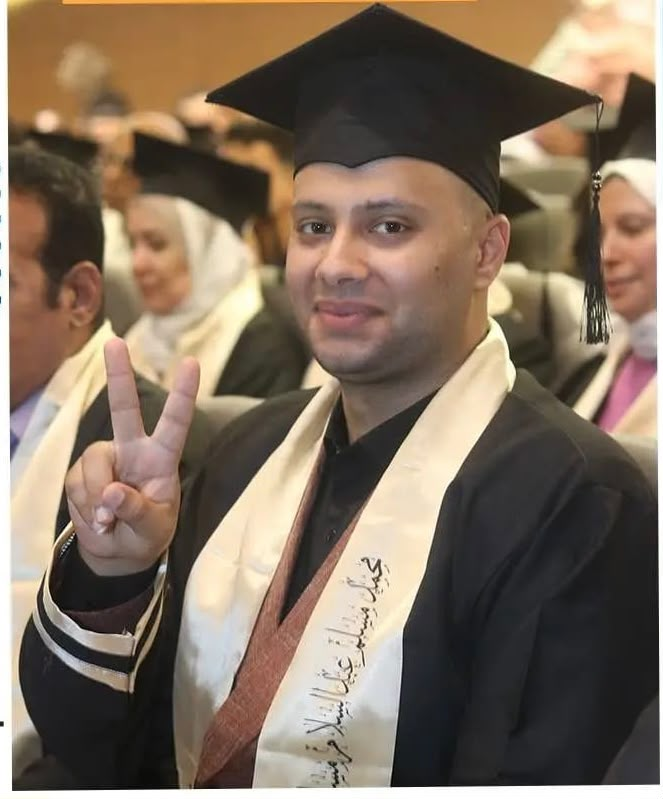
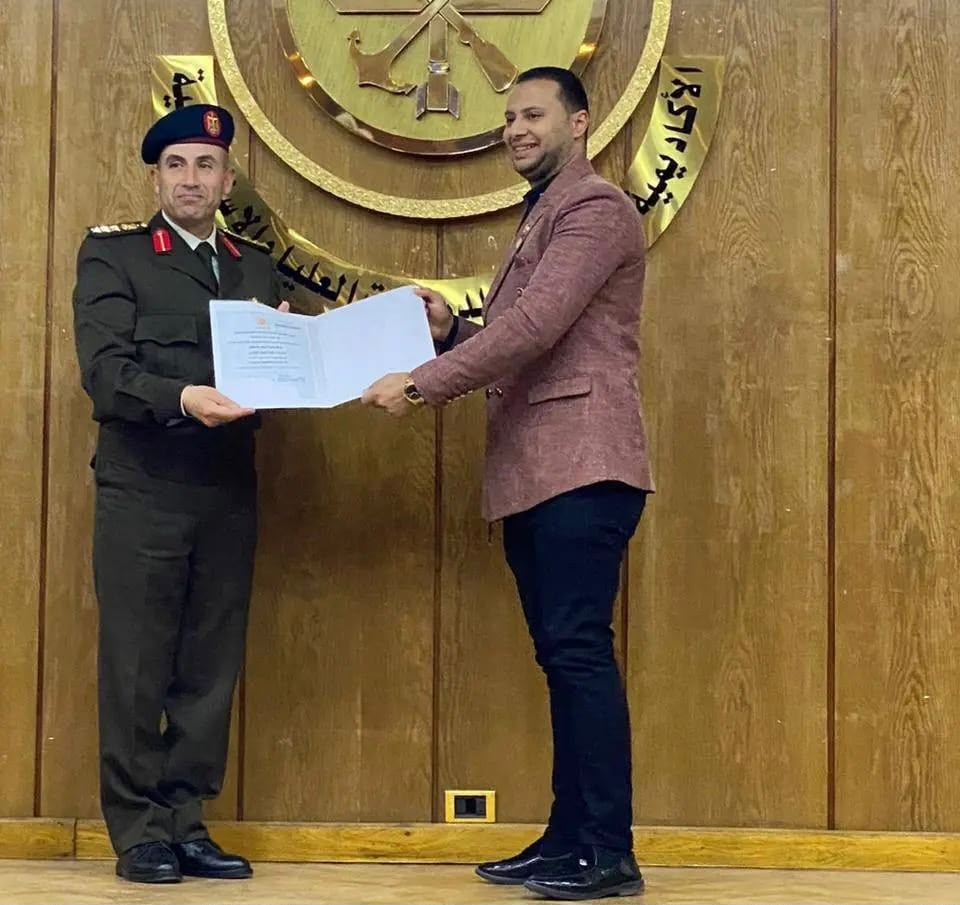
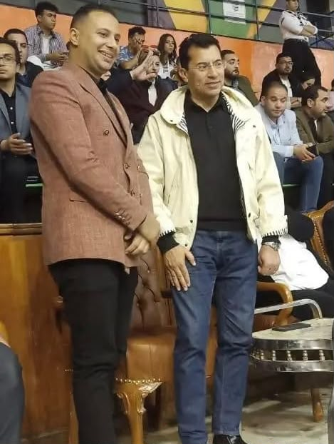

محمد مسلم عبد السلام مسلم سلام
(محمد أبو مسلم)هو أحد الكوادر الشبابية بمحافظة الشرقية، يعمل موظف بمستشفيات جامعة الزقازيق، ويجمع بين الخبرة المهنية في المجال الصحي والدراسة الأكاديمية في إدارة المستشفيات بكلية التجارة – جامعة الزقازيق. عُرف بنشاطه المجتمعي والشبابي ومشاركته في العديد من المبادرات التطوعية والتنموية، حيث تولى عددًا من المناصب القيادية في الكيانات الشبابية والمجتمعية. ويسعى دائمًا إلى خدمة المجتمع، وتمكين الشباب، والدفاع عن حقوق العاملين، إيمانًا بأن الشباب هم القوة الحقيقية لبناء المستقبل وتحقيق التنمية المستدامة
الشهادات والمؤهلات العلمية
- الثانوية العامة – مدرسة محمود مجدي الثانوية المشتركة (2019).
- دبلوم المعهد الفني للتمريض – جامعة الزقازيق (2021).
- طالب بكلية التجارة – جامعة الزقازيق (إدارة المستشفيات).
- دبلومة أخصائي الإرشاد النفسي والأسري جامعة عين شمس
- دبلومة معالج السلوكيات الإدمانية – جامعة طنطا.
- دورة إدارة الأزمات من الجهات التدريبية التابعة للقوات المسلحة المصرية
- الدكتوراه الفخرية من مؤسسة المستقبل. دورة إدارة الأزمات والكوارث.
- العديد من الدورات التدريبية في القيادة والإدارة والتنمية البشرية والعمل التطوعي
- دورة استراتيجيات الأمن القومي
أبرز المناصب والمهام القيادية
- موظف بمستشفيات جامعة الزقازيق.
- رئيس هيئة التمريض بمركز الحرية خلال الفترة من 2022م إلى 2024م.
- رئيس لجنة المبادرات المجتمعية بنادي القيادات الشبابية (YLC) التابع لوزارة الشباب والرياضة.
- المنسق العام لمحافظة الشرقية لكيان رواد المحافظات الحدودية.
- عضو المكتب التنفيذي بأكاديمية إعداد القادة – بلبيس.
- سفير الوعي التكنولوجي بوزارة التضامن الاجتماعي.
- عضو برلمان شباب مصر.
- عضو الاتحاد المصري للملاكمة.
- عضو ومشارك في العديد من المبادرات والكيانات الشبابية والتطوعية والتنموية.
- منظم ومشارك في عدد من المؤتمرات والملتقيات والندوات المجتمعية والشبابية على مستوى محافظة الشرقية وعدد من المحافظات.
- مساهم في تنفيذ العديد من المبادرات المجتمعية والتنموية الهادفة إلى خدمة المجتمع وتمكين الشباب وتعزيز ثقافة العمل التطوعي.

التخرج من جامعة عين شمس ٢٠٢١م دبلومة الارشاد النفسي والاسري

الحصول على دوره استراتجيات الامن القومى من الاكاديمية العسكرية العليا
